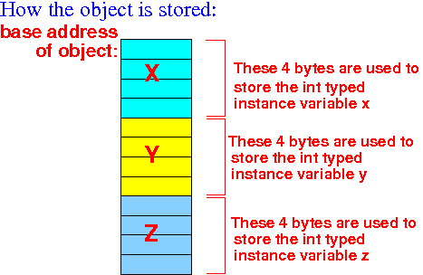

So we must first study how objects are stored in memory before we can study how linked lists are stored in memory...
public class BankAccount
{
int accNum;
double balance;
public double getBalance( )
{
return balance;
}
// Other methods omitted for brevity
}
|
the Java compiler will separate the instance variables and the methods in the class.
The Java compiler will collect all the instance variables in the class and place the variables in the class definition one-after-another in memory and compute the amount of memory needed to store all the (instance) variables in the class.
Note:
|
When we create an object in a Java program, the Java compiler will allocate (= reserve) the computed amount of memory
public class myClass1
{
int x;
int y;
int z;
// Methods omitted because they are not relevant
// in memory need computation....
}
|
When you create an object of the class myClass1, the Java compiler will reserve 12 bytes of memory and store the instance varaibles of the myClass1 object as follows:
|  |
The Java compiler will remember :
|
objVar.x = the x component (variable) in the object objVar
objVar.y = the y component (variable) in the object objVar
|
Notice that each component variable is a primitive typed variable
This notation is a very convenient way for the Java programmer to access a component variable in an object
The Java compiler provide this easy syntax to the Java programmer to help him write code that uses components inside an object
When you write a program without the help of the Java compiler (i.e., in assembler), you will need to do a lot of work yourself !!!
Let me explain what exactly is going on inside the Java compiler first when it access a component in an object.
|
to compute the address of the component.
Furthermore, the Java compiler will calculate the offset of each component of the object using the class definition
Example:
public class myClass1
{
int x; <--- First component always has offset = 0
int y; <--- Offset(y) = 4 because x is an int (4 bytes)
int z; <--- Offset(z) = 8 because there are 2 ints preceeding z
// Methods omitted because they are not relevant
// in memory need computation....
}
|
The Java compiler will remember that:
|
The Java compiler must also remember the data type of each component in the object.
|
We will learn how to do so in the next webpage.
Example:
public class List
{
int value;
List next; // This is a "reference" variable !!
....
}
|
Recall that a reference is an memory address (see: click here)
A reference variable is a variable that stores a memory address !!!
Recall that a memory address is a 32 binary unsigned integer value
So a reference variable is a 4 byte variable that stores an unsigned 32 bit binary number